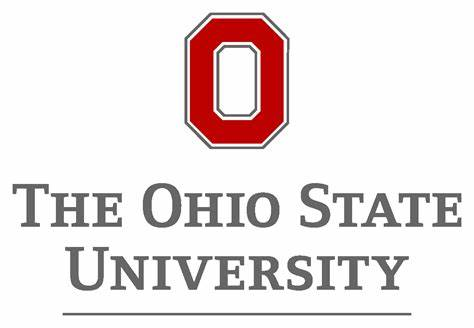

Education

The Ohio State University
Columbus, Ohio
Ph.D. in Agricultural, Environmental, and Development Economics
Aug. 2020 - May. 2025 (expected)
Committee: H. Allen Klaiber (Chair), Sathya Gopalakrishnan, Elena Irwin, Yao Wang
Dissertation title: Essays on the spatial spillover effect of land development program

Colorado State University
Fort Collins, Colorado
BS in Ecosystem Science and Sustainability
BA in Economics
Sep. 2018 – May. 2020
Honors Undergraduate Program Scholar

East China Normal University
Shanghai, China
BS in Ecology
Sep. 2015 – Jul. 2020
Awards: First Class Scholarship (2016-2017), University-level Outstanding Students (2016-2017), National Scholarship (2015-2016), University-level Outstanding Students (2015-2016)